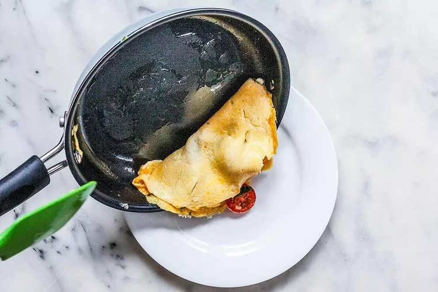

For our purposes here, we'll make an American-style omelette, and you will see how easy it is to accomplish even if you have never tried to make an omelette before.
Here are the key steps to read before you start so you know where you are going:
Step 1: Beat the eggs
Use two or three eggs per omelette, depending on how hungry you are. Beat the eggs lightly with a fork.
Step 2: Melt the butter
Use an 8-inch nonstick skillet for a 2-egg omelette, a 9-inch skillet for 3 eggs. Melt the butter over medium-low heat, and keep the temperature low and slow when cooking the eggs so the bottom doesn’t get too brown or overcooked.
Step 3: Add the eggs
Let the eggs sit for a minute, then use a heatproof silicone spatula to gently lift the cooked eggs from the edges of the pan. Tilt the pan to allow the uncooked eggs to flow to the edge of the pan.
Step 4: Fill the omelette
Add the filling—but don’t overstuff the omelette—when the eggs begin to set. Cook for a few more seconds.
Step 5: Fold and serve
Fold the omelette in half. Slide it onto a plate with the help of a silicone spatula.